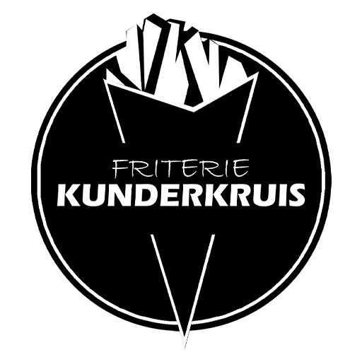

Wij hebben de volgende Veganistische snacks:
Vegan kipcorn
Vegan vlammetjes
Mini loempia’s
Vietnamese loempia’s
Satesaus
Vegan kipnuggets
vegan frietje taco
vegan shoarma
vegan curryworst
En dan natuurlijk de frietjes en tevens de Mayo en curry en verse uitjes